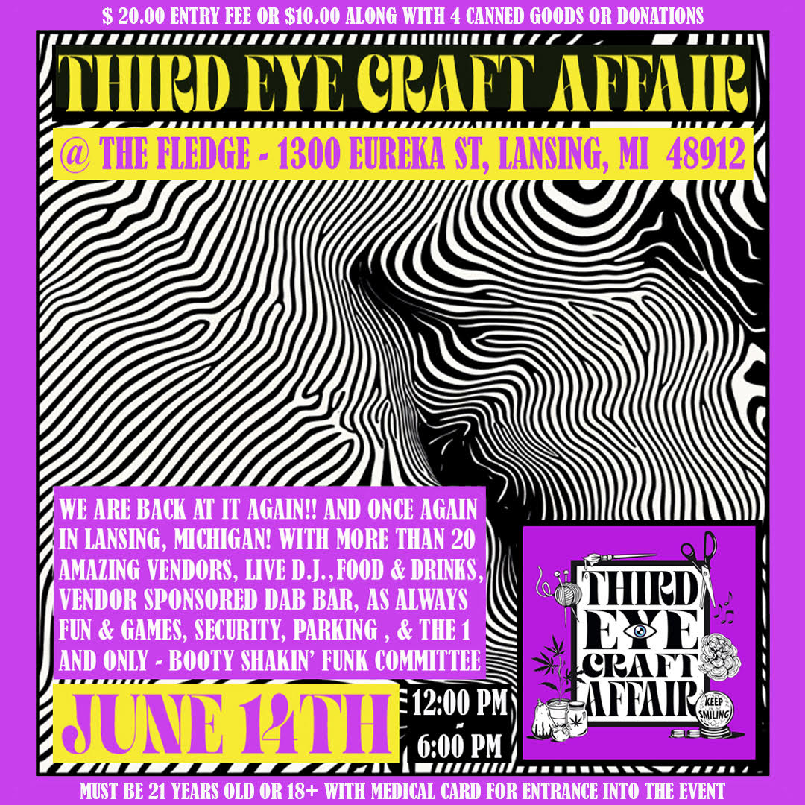

Keep Smiling — Where Craft, Community & Medicine Meet
3rd Eye Craft Affair is a joyful gathering of art, medicine, and community—where creativity, healing, and radical care converge.


Upcoming
🎪 Join us for the next 3E gathering...
Get ready for a fantastic day with delightful vendors from near and far. Engage in exciting games and activities with live DJs. Free entry with two canned goods. 21+ or 18+ with medical card.
Our Mission
This all started because I didn’t see a space that held our stories. So we built one.
This event is not just a party—it’s a practice. A way to honor joy as medicine.